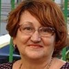
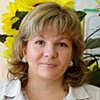
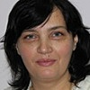
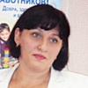

Дошкольное отделение школы № 1321
В 2015 году 29% первоклассников Школы № 1321 пришли из дошкольного отделения.
- 3-я Кабельная улица, 3
- Авиамоторная улица, 45
- Авиамоторная улица, 32
Воспитатели
Воспитатели, которых чаще всего благодарят родители (отзывы и профили сотрудников взяты с официального сайта школы):|
Воспитатель
Козлова Виктория Павловна
3 благодарности |
 Воспитатель
Южда Светлана Александровна
Воспитатель
Южда Светлана Александровна
3 благодарности |

Притыченко Людмила Викторовна
3 благодарности |
Логопед
Давидюк Ирина Ананьевна
1 благодарность |
|

Воспитатель
Ляхова Юлия Владимировна
1 благодарность |
 Воспитатель
Зайнигабдинова Светлана Михайловна
Воспитатель
Зайнигабдинова Светлана Михайловна
1 благодарность |
Воспитатель
Василенко Анастасия Викторовна
1 благодарность |

Воспитатель
Сперанская Юлия Олеговна
1 благодарность |
|
Воспитатель
Митрохина Александра Михайловна
1 благодарность |
Руководитель
Историна Лина Васильевна
1 благодарность |

Старший воспитатель
Пегина Елена Аликовна
1 благодарность |
Физ. рук.
Роменская Марина Владимировна
1 благодарность |
|
Логопед
Максимова Татьяна Александровна
1 благодарность |
Психолог
Котова Светлана Викторовна
1 благодарность |
Дефектолог
Петрова Виктория Валерьевна
1 благодарность |
Отзывы
Данные собраны c официального сайта школы и через форму для отзывов.
Выражаю безграничную благодарность всему педагогическому составу сада №125! Моя старшая дочь посещает старшую группу. Ходит в сад с огромным удовольствием, приносит оттуда много новой и интересной информации. С детками здесь очень много занимаются. Для моей дочки это очень важно, т.к. она очень любознательная и всегда интересуется окружающим миром. Дома часто просит что-нибудь рассказать или прочитать. Поэтому этот сад для нас - просто находка! Замечательные воспитатели - Анастасия Викторовна и Анна Юрьевна, любящие свою профессию и всех деток! Младшая дочь ходит в группу кратковременного пребывания. Сказать, что она обожает своих т.Юлю и т.Свету- значит, ничего не сказать! Мы просыпаемся с вопросом : "А я в садик пойду?". Очень много поделок ребенок делает сам для своих любимых воспитателей и несет их в сад! Великолепные воспитатели! Настоящие асы своего дела! Я поражаюсь как можно увлечь малышей самого раннего возраста! У Светланы Викторовны и Юлии Олеговны это бесспорно получается более чем на 100%! Занятия у малышей самые разные: лепка, рисование и аппликация разными способами. Занятия в спорт зале и музыкальном зале ежедневные! Малыши плавают в бассейне, гуляют на улице.И еще им показывают кукольный театр! Вообщем, мы в восторге! Огромное спасибо за то, что Вы так профессионально подготовили моего ребенка к саду! Еще хотелось бы отметить то, какие замечательные готовят утренники в саду! Просто потрясающие! Всегда весело, интересно, задорно! Детки все активные, глазки горят! Много положительных эмоций уносим мы с собой после праздников! Отдельное спасибо заведующей - Татьяне Владимировне! Спасибо Вам за такой чудесный коллектив! Всегда отзывчивые, добрые, внимательные! С благодарностью, А. Голодкова.
Директору ГБОУ г. Москвы
Школы 1321 «КОВЧЕГ»
БЛАГОДАРСТВЕННОЕ ПИСЬМО РЕУЭЛЬ РОМАН АБРАМОВИЧУ
Уважаемый Роман Абрамович!
Обращаются к Вам родители подготовительной группы школы № 1321 «КОВЧЕГ» дошкольного отделения 3 .
Заканчивая детский сад, мы преисполнены глубокой благодарностью к его коллективу под руководством Заведующей детским садом ПРИТЫЧЕНКО ЛЮДМИЛЫ ВИКТОРОВНЫ и Старшего воспитателя ПЕГИНОЙ ЕЛЕНЫ АЛИКОВНЫ, с которым наши дети чувствовали все эти годы себя любимыми и защищенными. Этот коллектив, несмотря на невысокое материальное поощрение труда воспитателя, отдавал детям всю душу и сердце, не жалея ни сил ни времени на дополнительные занятия, на работу с родителями, на благоустройство детских участков.
-Нелегкая работа – заменять маму получилась у воспитателей ЛЯХОВОЙ ЮЛИИ ВЛАДИМИРОВНЫ и ЛАПА ВИТАЛИИ АНДРЕЕВНЫ, логопеда ДАВИДЮК ИРИНЫ АНАНЬЕВНЫ ,помощника воспитателя БРИНДАРОВОЙ ИНЕССЫ МИХАЙЛОВНЫ на отлично. Наши дети действительно вспоминают о них дома, как о родных.
-Нелегкая работа – заменять маму получилась у воспитателя МАХОТИНОЙ ТАТЬЯНЫ АЛЕКСАНДРОВНЫ и ЗАХАРОВОЙ ОЛЬГИ ВЛАДИМИРОВНЫ , логопеда МАКСИМОВОЙ ТАТЬЯНЫ АЛЕКСАНДРОВНЫ ,помощника воспитателя КУРЕНКОВОЙ ВАЛЕНТИНЫ ВАСИЛЬЕВНЫ на отлично. Наши дети действительно вспоминают о них дома, как о родных.
-Нелегкая работа – заменять маму получилась у воспитателей ЮЖДА СВЕТЛАНЫ АЛЕКСАНДРОВНЫ и КОЗЛОВОЙ ВИКТОРИИ ПАВЛОВНЫ , логопеда ПЕТРОВОЙ ВИКТОРИИ ВАЛЕРЬЕВНЫ, дефектолога ДЕМЕНКОВОЙ АНЖЕЛЫ ЭДУАРДОВНЫ, помощника воспитателя ФЕОКТИСТОВОЙ АННЫ СЕРГЕЕВНЫ на отлично. Наши дети действительно вспоминают о них дома, как о родных.
- Наряду с вышеперечисленными сотрудниками неумолимо участие психолога САМОЙЛОВОЙ ВЕРЫ МИХАЙЛОВНЫ, музыкального руководителя КАНЕВОЙ АЛЕНЫ АЛЕКСЕЕВНЫ, физкультурного руководителя РОМЕНСКОЙ МАРИНЫ ВЛАДИМИРОВНЫ, медицинского работника КОМАРОВОЙ ФИРДАУС ФАТЫХОВНЫ, заведующей хозяйственной частью КОНОВОЙ ЗОИ АЛЕКСАНДРОВНЫ, поваров ДЖАЛАЕВОЙ ЗУМРУД ГАСАНОВНЫ и ТУРГУНБАЕВОЙ ШАХРЕЗАД НУРМАМАТОВНЫ, которые посвятив себя работе с нашими детьми, своей заботой,любовью учили ребят быть честными,добрыми и настоящими , чтобы нами славилась Земля!
Выражая искреннюю нашу признательность, хотим, чтобы вы были в курсе её. Мы будем вам благодарны, если вы присоединитесь к нам, и найдете возможность отметить труд наших педагогов моральным и материальным признанием их заслуг в нелегком деле воспитания подрастающего поколения С уважением, родители выпускников 2016 года
Вложенный файл
Школы 1321 «КОВЧЕГ»
БЛАГОДАРСТВЕННОЕ ПИСЬМО РЕУЭЛЬ РОМАН АБРАМОВИЧУ
Уважаемый Роман Абрамович!
Обращаются к Вам родители подготовительной группы школы № 1321 «КОВЧЕГ» дошкольного отделения 3 .
Заканчивая детский сад, мы преисполнены глубокой благодарностью к его коллективу под руководством Заведующей детским садом ПРИТЫЧЕНКО ЛЮДМИЛЫ ВИКТОРОВНЫ и Старшего воспитателя ПЕГИНОЙ ЕЛЕНЫ АЛИКОВНЫ, с которым наши дети чувствовали все эти годы себя любимыми и защищенными. Этот коллектив, несмотря на невысокое материальное поощрение труда воспитателя, отдавал детям всю душу и сердце, не жалея ни сил ни времени на дополнительные занятия, на работу с родителями, на благоустройство детских участков.
-Нелегкая работа – заменять маму получилась у воспитателей ЛЯХОВОЙ ЮЛИИ ВЛАДИМИРОВНЫ и ЛАПА ВИТАЛИИ АНДРЕЕВНЫ, логопеда ДАВИДЮК ИРИНЫ АНАНЬЕВНЫ ,помощника воспитателя БРИНДАРОВОЙ ИНЕССЫ МИХАЙЛОВНЫ на отлично. Наши дети действительно вспоминают о них дома, как о родных.
-Нелегкая работа – заменять маму получилась у воспитателя МАХОТИНОЙ ТАТЬЯНЫ АЛЕКСАНДРОВНЫ и ЗАХАРОВОЙ ОЛЬГИ ВЛАДИМИРОВНЫ , логопеда МАКСИМОВОЙ ТАТЬЯНЫ АЛЕКСАНДРОВНЫ ,помощника воспитателя КУРЕНКОВОЙ ВАЛЕНТИНЫ ВАСИЛЬЕВНЫ на отлично. Наши дети действительно вспоминают о них дома, как о родных.
-Нелегкая работа – заменять маму получилась у воспитателей ЮЖДА СВЕТЛАНЫ АЛЕКСАНДРОВНЫ и КОЗЛОВОЙ ВИКТОРИИ ПАВЛОВНЫ , логопеда ПЕТРОВОЙ ВИКТОРИИ ВАЛЕРЬЕВНЫ, дефектолога ДЕМЕНКОВОЙ АНЖЕЛЫ ЭДУАРДОВНЫ, помощника воспитателя ФЕОКТИСТОВОЙ АННЫ СЕРГЕЕВНЫ на отлично. Наши дети действительно вспоминают о них дома, как о родных.
- Наряду с вышеперечисленными сотрудниками неумолимо участие психолога САМОЙЛОВОЙ ВЕРЫ МИХАЙЛОВНЫ, музыкального руководителя КАНЕВОЙ АЛЕНЫ АЛЕКСЕЕВНЫ, физкультурного руководителя РОМЕНСКОЙ МАРИНЫ ВЛАДИМИРОВНЫ, медицинского работника КОМАРОВОЙ ФИРДАУС ФАТЫХОВНЫ, заведующей хозяйственной частью КОНОВОЙ ЗОИ АЛЕКСАНДРОВНЫ, поваров ДЖАЛАЕВОЙ ЗУМРУД ГАСАНОВНЫ и ТУРГУНБАЕВОЙ ШАХРЕЗАД НУРМАМАТОВНЫ, которые посвятив себя работе с нашими детьми, своей заботой,любовью учили ребят быть честными,добрыми и настоящими , чтобы нами славилась Земля!
Выражая искреннюю нашу признательность, хотим, чтобы вы были в курсе её. Мы будем вам благодарны, если вы присоединитесь к нам, и найдете возможность отметить труд наших педагогов моральным и материальным признанием их заслуг в нелегком деле воспитания подрастающего поколения С уважением, родители выпускников 2016 года
Вложенный файл
Я,Метальникова Любовь Ивановна,бабушка внуков Федорова Даниила Андреевича 23.11.2010г.р. И Федоровой Арины Андреевны 24.04.2009 г.р., посещающих структурное подразделение " Дошкольное отделение 2", была на утреннике, праздник Осени и получила много положительных эмоций. Во всех отношениях праздник удался!Зал украшен великолепно, хорошая подготовка представления, организация детей.Все замечательно организовано. Дети счастливы, активны, непосредственны.Дети пели песни, читали стихи, танцевали. Все детки живые, такие разные, глазки горят, стараются.Просто супер!Хочется выразить благодарность музыкальному руководителю, воспитателям:2-я гр Светлане Михайловне, 4-я гр. Александре Михайловне, помощникам воспитателя. Спасибо всем, кто организовывать и участвовал в этой осенней сказке.Лина Васильевна,Вам спасибо за доброты, внимание, спасибо за дружный коллектив. Ждем новых приятных представлений. Такие радостные моменты запоминаются очень долго. Еще раз спасибо за радость и хорошее настроение, до ставленное мне и моим внукам! 29.10.2014г.
Если вы нашли ошибку или неточность, пожалуйста, сообщите нам об этом.
Ученик, выпускник или родитель? Оставьте отзыв о детском саде.